This document is password protected. Enter the password to continue.
Loyalife · internal guide
What it is, how a request actually travels through it, what it can and can't do today, and how to set it up.
01
MCP (Model Context Protocol) is the standard that makes the second kind possible — think of it the way you'd think of a plug shape: an agreed interface so any AI assistant and any piece of software can talk to each other without a custom, one-off integration every time.
The one thing to never forget: MCP does not make the AI all-powerful inside Loyalife. It gives it a controlled way to use specific things Loyalife already lets it use — nothing more.
02
It's a second front door into the platform — sitting alongside the existing admin console, not replacing it.
The MCP talks to the same services that an admin/user can already use from the frontend in the admin console.
The AI and your browser never share each other's login details directly — a background handshake (Section 4) keeps the two connected without either side seeing the other's credentials.
03
step ④ happens on every single request — there's no "trusted session" shortcut
04
You log in once through the normal Loyalife flow. The AI never receives your console password or cookie.
Your existing role decides which tools the AI can even see — and it's re-checked the instant a tool is called, not just at login.
Access expires automatically and refreshes quietly in the background — a live connection won't nag you, but a stale one dies on its own.
If an account is locked, deactivated, or program access is pulled, the AI session dies immediately — not "eventually."
Every session and every tool call is logged: who, what, when, and whether it succeeded.
Independent limits per person, per program, and per login attempt stop runaway or abusive use — including a loop the AI itself might get stuck in.
05
The Loyalife MCP exposes roughly 119 tools across 15 functional areas — covering most of what an admin can already do in the console.
A tool the AI can't see doesn't exist to it. If your role lacks permission, the AI isn't offered that tool at all — it's not that it tries and gets denied, it's never on the menu.
06
What this removes: manual navigation across screens, context-switching, repetitive lookups, and needing to know exactly which report or API has the answer.
What it does not remove: permissions, business rules, validation, approval steps, or the need for a capability to exist as an exposed tool in the first place. MCP removes the legwork around governance — it doesn't skip governance.
07
The important distinction: MCP does not create capabilities. If the underlying Loyalife data or operation exists and can be safely exposed as a tool, we may be able to reach it through AI without building a dedicated experience for every use case.
A spreadsheet defines a batch of campaigns — name, rules, dates, target segment, one row per campaign. Today, someone builds each one by hand in the console. With MCP, Claude reads the spec and creates them directly — the same pattern already used to bulk-configure member attributes.
This is an example of a real feature that doesn't need to be built as a Loyalife feature. MCP already exposes what it needs.
A CS lead has already reviewed a batch of claims and knows which should be approved and which declined. Today, that means opening the approvals queue and clicking through them one at a time. With MCP, Claude works through the list directly.
This is an example of another real feature that doesn't need to be built as a Loyalife feature. MCP already exposes what it needs.
| Use case | Traditional approach | MCP opportunity |
|---|---|---|
| What's Program X's current tier & qualification setup? | Navigate the Tiers screen, cross-reference config | Ask directly, get a plain-language summary |
| Who's in Segment Y, and what does it actually filter on? | Open the segment builder, inspect filter logic | Ask directly, including "why is member Z in/out of this segment?" |
| Why didn't this member receive points on their last transaction? | Pull transaction logs, cross-check rules, maybe escalate to engineering | AI gathers transaction, rule, and anomaly context in one pass |
| Validate a new client's setup against the SOW before go-live | Manually walk every config screen against a checklist | AI reads back the current configuration for a human to compare against the SOW |
| Approve/decline a flagged anomaly transaction, with the reasoning shown | Open the approvals queue, inspect flags manually | AI surfaces why it was flagged, then performs the approval/decline |
| Set up a tailored demo program before a client pitch | Manually configure a demo program and seed sample data | AI creates the campaign/segment/sample data on request |
| Bulk-correct member point balances after a data error | Raise it with engineering, or run a manual correction script | AI could technically perform the correction directly |
| "How does our redemption rate compare to last quarter?" | Pull a report, or ask the data team | AI assembles this from several read tools |
| How many points expire in the next 30 days, and for whom? | A dedicated expiry report/screen | Ask directly — expiry-schedule tools already return this per member |
| Summarize pending approvals older than 3 days, grouped by type | An approvals-aging dashboard | AI pulls pending/all approvals and groups them |
| Which fraud rules triggered the most this month? | A fraud-rule analytics feature | AI cross-references fraud rules with anomaly transactions |
| Who has access to what, and does anyone have excessive permissions? | A user-access-audit report | AI reads team/role data and flags outliers |
| Walk me through everything configured for Program X and flag anything incomplete | A structured go-live checklist tool | AI reads config/tier/rule/fraud data and reports back |
| What's different between Program A's and Program B's tier setup? | A "compare programs" feature | AI pulls both configs and diffs them live |
| How much does Segment A overlap with Segment B? | A segment-overlap analysis tool | AI could compute this from member/segment data |
| Auto-pull member/transaction/rule context the moment a support ticket references a member | An embedded support-tool integration | Everything it needs exists as read tools, ad hoc in chat |
08
Many enterprise clients — banks especially — spend little time in the admin console themselves. Internal Loyalife teams are likely the first real users of MCP.
Arguably the strongest pitch moment: demonstrating an AI-assisted conversation with Loyalife, live, is itself the demo.
A great day-to-day timesaver.
Speeds up investigation. A real backend bug can now get escalated to engineering — and with better evidence attached.
09
the only crossing point — with a checkpoint on every single trip across
10
11
Captured Example: Connecting to a QA program.
Applies the same way on QA, EU, or IN. Go to the Base Program → Platform Config → Program Level Settings, pick the program, open Module Config, and turn on "AI agent access." This just makes the MCP option show up in that program's own settings — it doesn't connect anything yet.
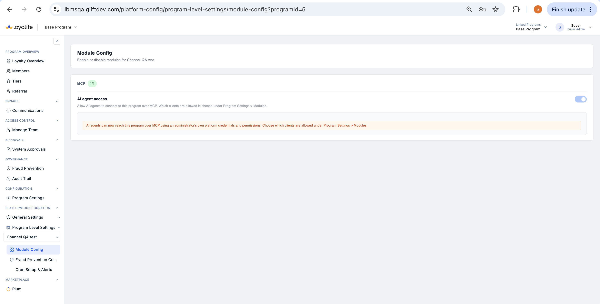
Open that program directly → Program Settings → Modules → MCP, and choose which AI agents can connect. Works best with Claude.
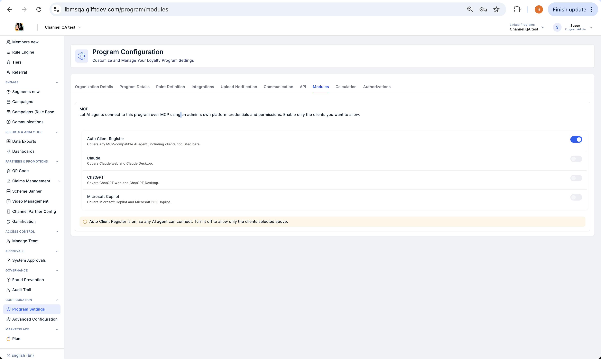
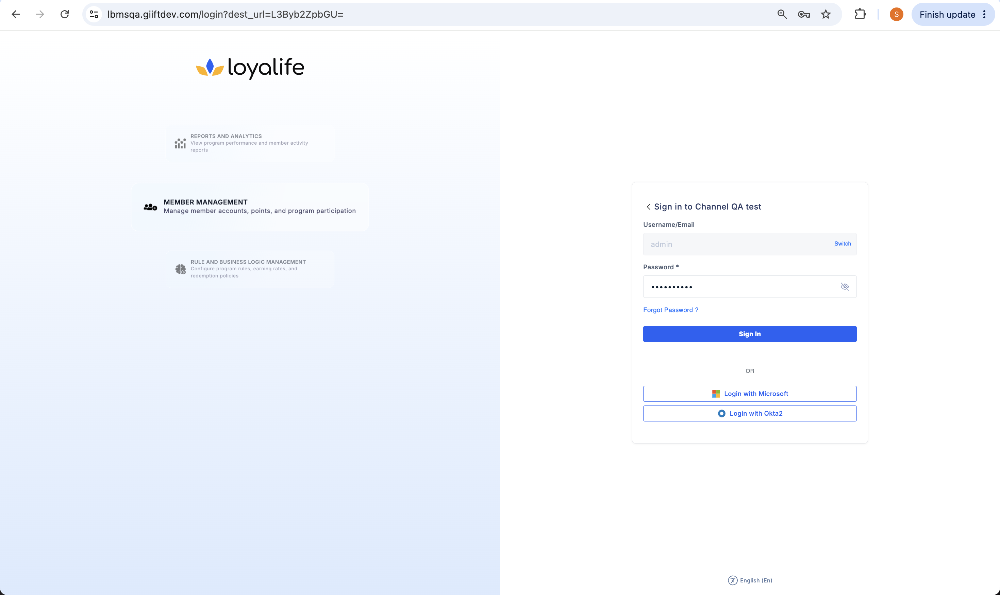
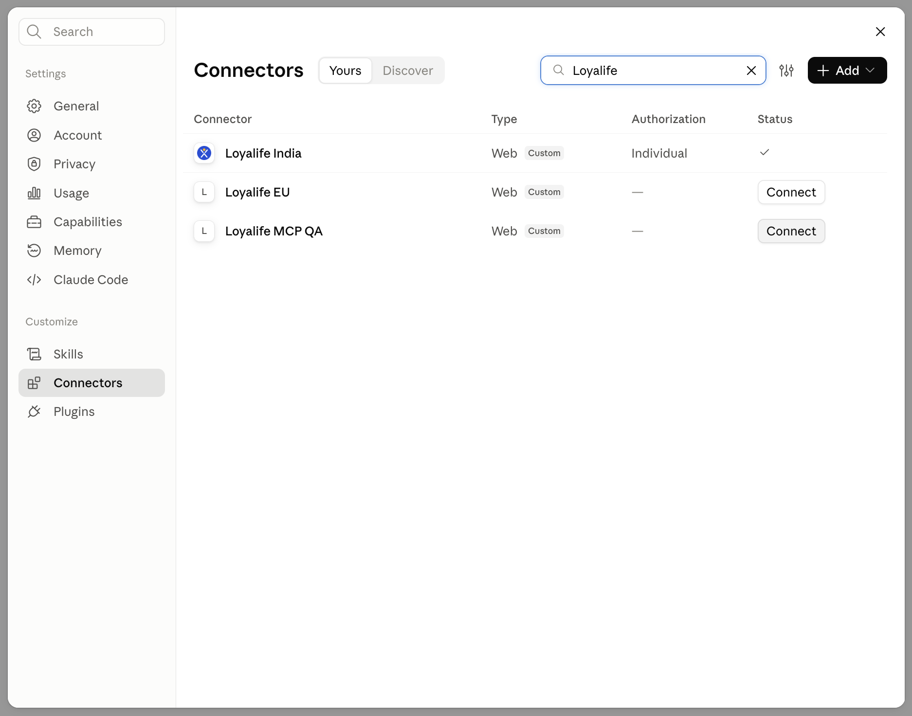
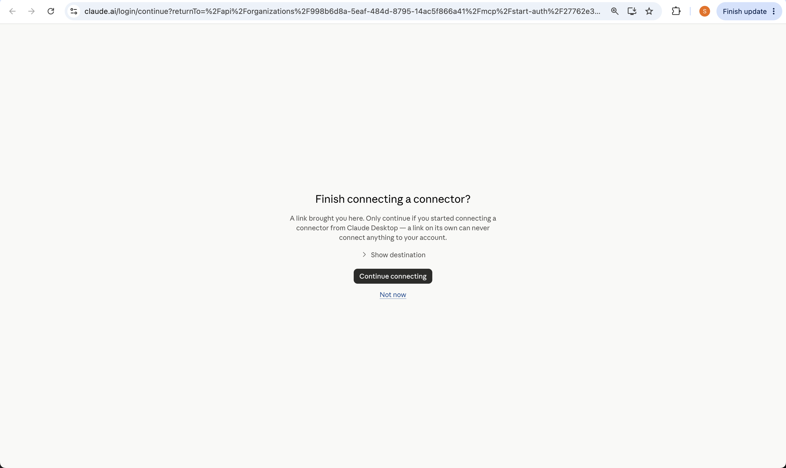
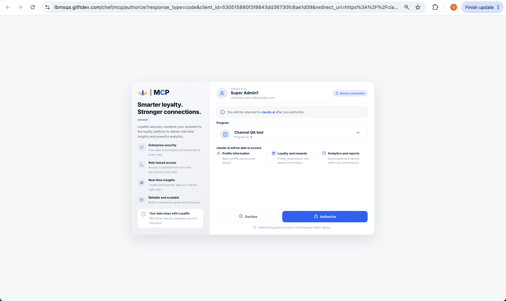
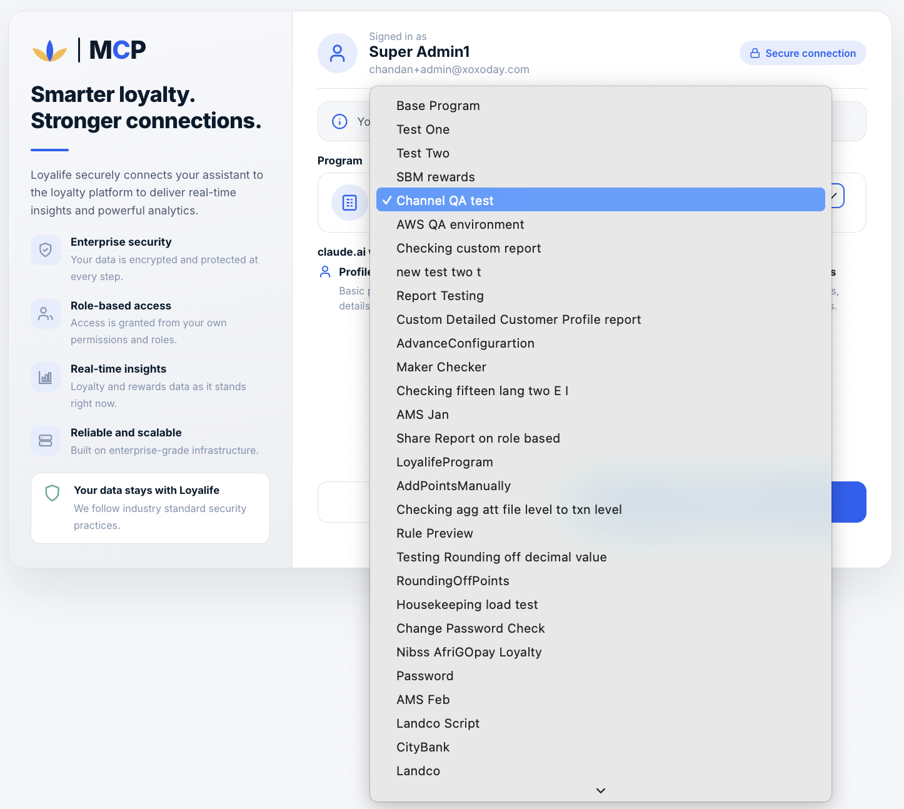
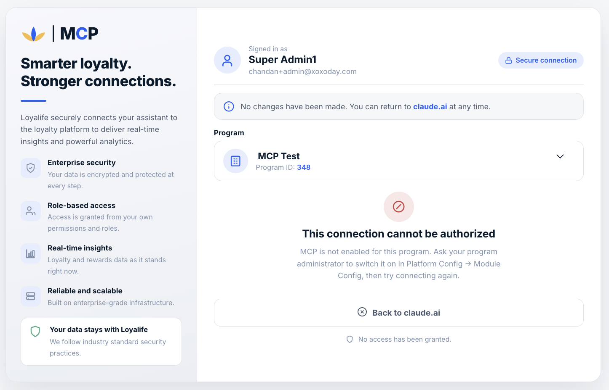
This is steps 1 & 2 above, done for that program.
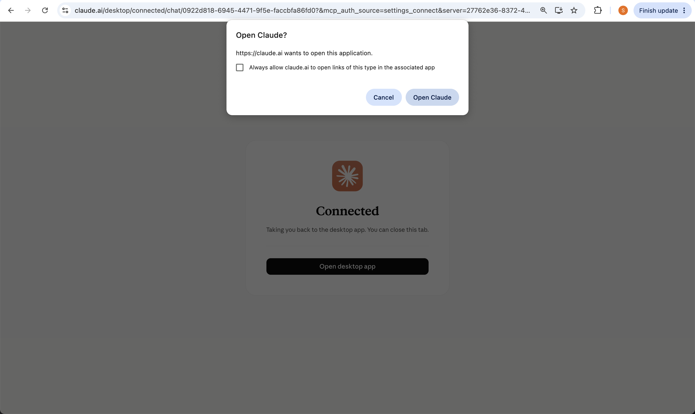
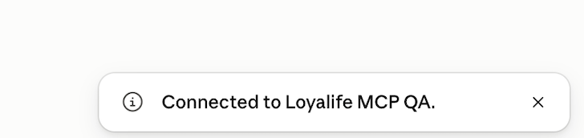
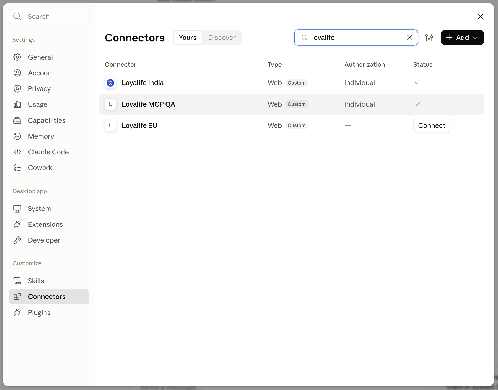
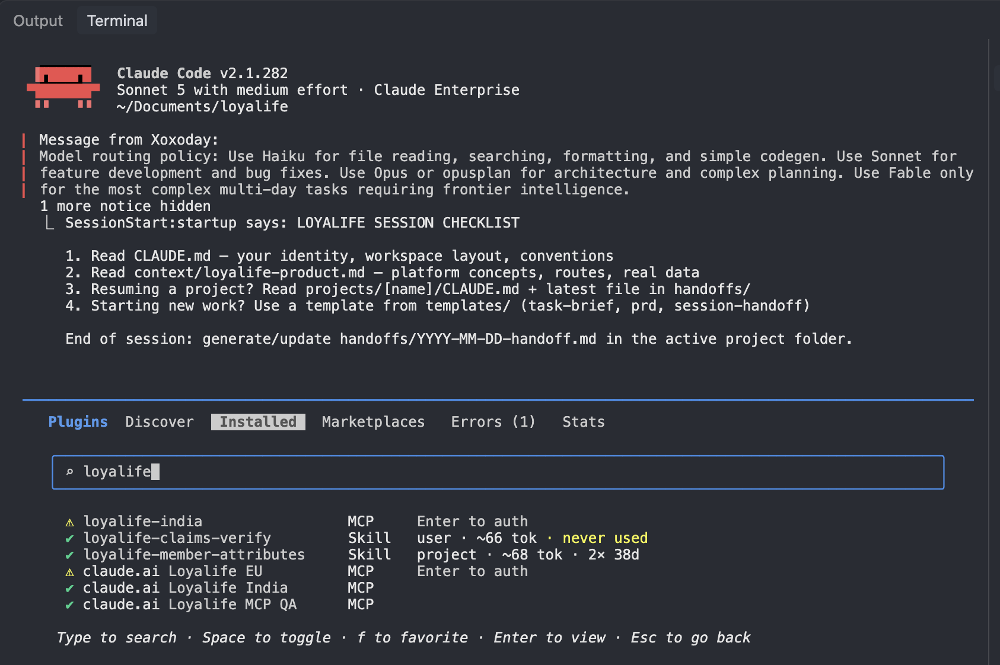
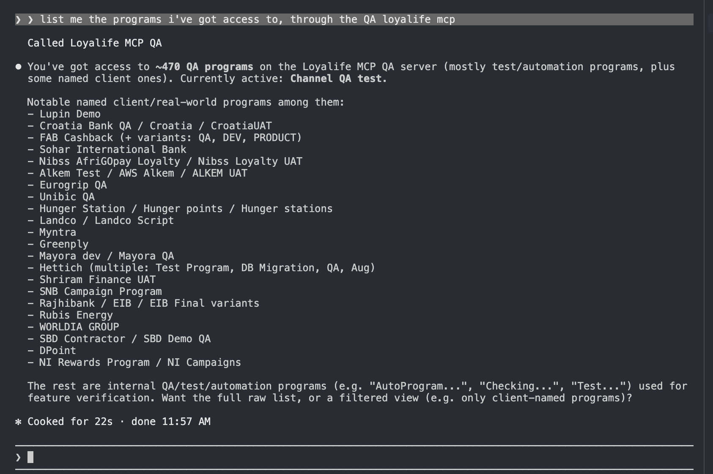
12
The one sentence to remember: MCP doesn't make Loyalife itself intelligent. It gives an AI assistant a controlled, permission-checked way to interact with the specific capabilities we choose to expose — nothing more, nothing less.
Practically, that means the useful question for a PM isn't "where do we put the AI?" — it's "what capability should we expose, to whom, and under what conditions?" The nearest-term proving ground for that is probably our own teams, not client admins; the longer-term opportunity, including in enterprise conversations, still depends on the same fundamentals — permissions, auditability, and capabilities that are actually built and exposed.